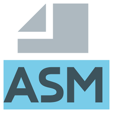

アセンブリ言語 - チュートリアル

アセンブリ言語（Assembly Language）は特定のハードウェア向けの低水準言語です。
アセンブリ言語は電子計算機、マイクロプロセッサ、マイクロコントローラのプログラミングに使用されます。
アセンブリ言語は機械命令セットと一対一に対応しており、クロスプラットフォームでの移植はできません。
C、Python などの高水準言語とは異なり、アセンブリ言語は直接操作します。寄存器、内存地址とCPU 指令，いかなる抽象層にも遮られることなく。
なぜアセンブリを学ぶのか
アセンブリ言語を学ぶことで、コンピュータの低水準の動作原理を本当に理解できます。
以下はアセンブリを学ぶいくつかの核心的な価値です：
| 学习目标 | 说明 |
|---|---|
| コンピュータの低層を理解する | CPU、メモリ、レジスタがどのように連携して動作するかを把握する |
| デバッグ能力を向上させる | 逆アセンブルコードを読んで、低水準のバグを特定できる |
| 性能优化 | コンパイラが生成するコードを理解し、より効率的な高水準言語プログラムを書く |
| 安全研究 | リバースエンジニアリング、脆弱性分析、shellcode 作成の基礎 |
| 嵌入式开发 | リソースが限られたデバイス上でハードウェアを直接制御する |
本チュートリアルを学ぶ前に知っておくべきこと
本チュートリアルを学習する前に、以下の基礎知識を備えておくことをお勧めします：
- 基本的なコンピュータ操作（ファイル管理、コマンドラインの使用）を理解している
- いずれかの高水準プログラミング言語の基本概念（変数、ループ、関数）を理解している
- 2進数、16進数の基本概念を理解していること（必須ではありません。チュートリアル内で解説します）
チュートリアルで使用するツール
| 工具 | 用途 | 版本建议 |
|---|---|---|
| NASM | アセンブラは、アセンブリソースコードをオブジェクトファイルに変換します | 2.16 以降 |
| GCC 或 LD | リンカは、オブジェクトファイルをリンクして実行可能ファイルにします | 任意版本 |
| GDB | デバッガは、ステップ実行とレジスタ/メモリの検査を行います | 任意版本 |
本チュートリアルのすべてのサンプルコードは、Linux環境でNASMアセンブラを使用して作成・テストされています。
Windowsを使っている場合は、WSLをインストールするか、仮想マシンを使ってLinux環境を構築できます。
学习建议
各章を順番に読み進め、各コードサンプルを実際に入力して実行してください。
アセンブリ言語の学習は実践が重要であり、見るだけで書かなければ習得できません。
理解できない概念に遭遇した場合は、ペースを落として、インターネットで検索しながら理解を深めてください。
其他扩展アセンブリ言語の学習曲線は急ですが、一度理解すれば、あなたのコンピュータに対する認知は質的に変化します。続けていけば、違った景色が見えてくるでしょう。